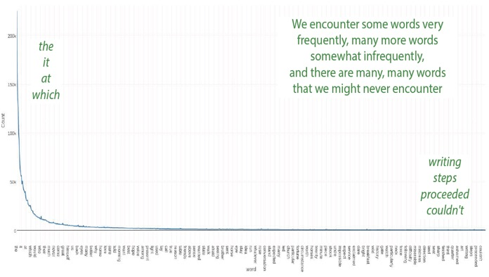
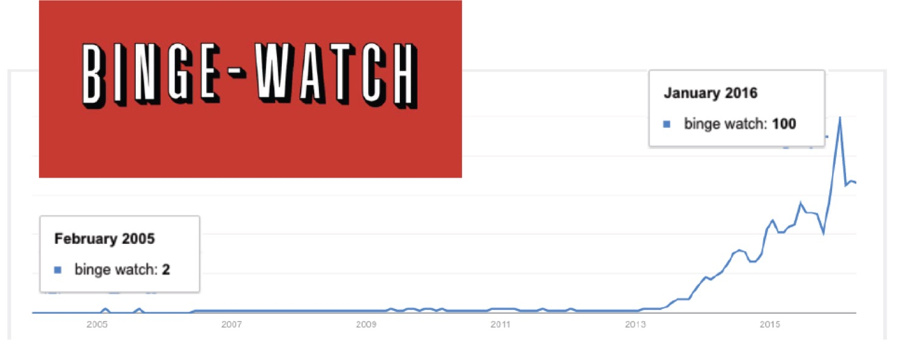
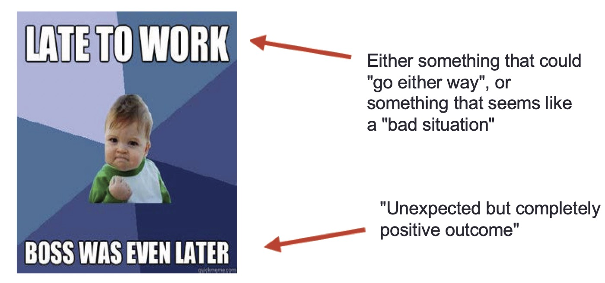
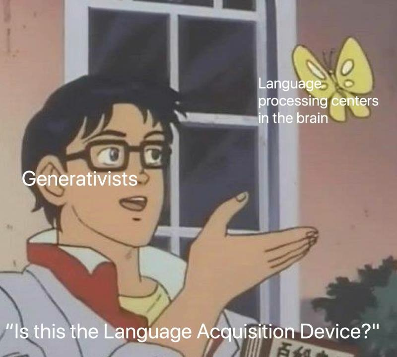

(I’m always chasing better learning outcomes. Oh well.)
The Wide World of Words
Morphological Productivity
Productivity as Restriction
Productivity as Extension
Lexicalization
The average adult speaker of a language knows 20,000-30,000 words
These include function words
As well as content words
These words range from very common (‘the’) to very uncommon (‘decimate’)
“In a given corpus of natural language, the frequency of a word is inversely proportional to its rank in the frequency table”
The most common words are really common!

We don’t need to know that many words to be functional day-to-day
but rare words are exceedingly rare
Because we probably don’t know all of the words
… and even if we did, we need new words regularly!
New concepts are regularly developed
New cultural or general concepts need marked

Affixation
Stem modification
Conversion
Reduplication
This could be inflectional
Or derivational
Cuteness, but *quicklyness
English plural as ‘cats’, ‘dogs’, ‘dishes’, ‘deer’, ‘oxen’, ‘foci’
Speakers know what forms apply to which words
There are two ___?
An object that is a lot like this would be ___?
If you turn something into a glanch, you would ___ it?
Somebody who uses a glanch would be a ____?
The degree to which a grammatical process is in use by speakers
Can we use this morphological pattern with a brand new base?
What knowledge or abilities do speakers/listeners use to make/understand words they haven’t heard before?
How can we characterize the productivity of a morphological process?
How do we know what processes can and can’t work with a given word?
Is this word form learned as a monolithic whole, or as analyzable chunks?
There are two approaches in common use
“Let’s assume that all morphological patterns are unconstrained, and then identify those unique places where it appears constrained!”
Identify the pattern, then describe when that pattern can’t be extended to new forms
The restrictions dictate the productivity
Sparse -> Sparsity
Secure -> Security
Responsible -> Responsibility
Productive -> Productivity
Foolish -> *Foolishity
Sexy -> *Sexity
Peaceful -> *Peacefulity
-ity works with all adjectives except those ending in -ish, -y, or -ful
Phonological Restrictions
Semantic Restrictions
Morphological Restrictions
The form of the base restricts the application of an affix
English patient noun -ee works in retiree and payee
English verbal -ize works with privatize and globalize
These have no semantic or morphological basis, just simple rules based on the form of the word!
-ee only attaches to words without final /i/
-ize only attaches when there would be an alternating rhythm
The meaning of the base restricts the application of an affix
Russian “quality noun” affix -stvo only works with people-describing adjectives
bogatyj ‘rich’ -> bogatstvo ‘richness’
znakomyj ‘acquainted’ -> znakomstvo ‘acquaintance’
udaloj ‘bold’ -> udal’stvo ‘boldness’
lukavyj ‘wily’ -> lukavstvo ‘cunning’
vjalyj ‘withered’ -> *vjal’stvo
priemlemyj ‘acceptable’ -> *priemlemstvo
The grammatical or morphological nature of the base restricts the application of an affix
The English -ee only attaches to verbs
The -ando progressive aspect in Spanish only attaches to ‘-ar’ verbs
“Let’s assume that all morphological patterns are constrained, and then identify those unique places where it appears to extend!”
Identify the pattern, then describe what forms it extends to.
The extent dictates the productivity
“English -ity is typically used to make nouns from adjectives ending in -able and -ive”
responsible -> responsibility, productive -> productivity, available -> availability, payable -> payability
creative -> creativity, inclusive -> inclusivity, responsive -> responsivity
“Sure, maybe it works with some other words, but that is where it’s always productive”
A: Almondy
B: Almondish
C: Almondtacular
D: Almonderiffic
E: of almond
Especially when many morphemes are borrowed and the ‘proper’ form depends on the language
“Was this borrowed from Latin? Greek? Is this Germanic?”
A: Octopus
B: Octopuses
C: Octopi
D: Octopodes
E: Hexadecapus
We can ask these same questions for other patterns of morphological change
How often does this process occur for new words?
How regularly (and where) does it occur for existing words?
Humans are excellent at finding and extending patterns
Let’s give it a try





Seeming success -> Unexpected twist of fate leaving the success hollow
Keysmashing (asdf;lkj)
SpOngEBoB MemE!


-en is no longer a productive plural for English
Ablaut is no longer a productive process
We view ‘children’ as a quirk of ‘child’
We view ‘brethren’ as a separate word
We consider `strong’ (ablauted) verbs to be ‘irregular’
You may find it in old words
Speakers may be vaguely aware of the affix
It’s no longer active
It is lost to the language
… and some things that should not have been forgotten were lost. History became legend, legend became myth. And for two and a half thousand years, the morpheme passed out of all knowledge.
 |
| Until, when chance came, it ensnared another bearer. |
There are a great many words, but we always need more
Some affixes are productive, available to use for new words
We can define productivity in terms of restriction, or extension
When a form completely ceases to be productive, it is lexicalized
… until it is discovered once more